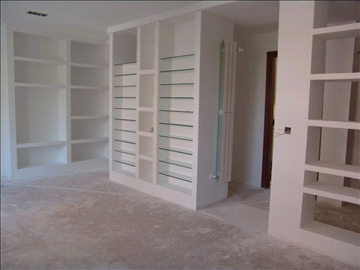

Sobre nuestros Servicios


- Mantenimiento de comunidades
- Ejecución de obra nueva
- Reformas y rehabilitaciones
- Reparaciones
- Intervenciones singulares y obras especiales
Para el desarrollo de los servicios anteriores SEGRESCO pone a disposición del cliente los oficios necesarios para la ejecución de cualquier obra:
- Albanileria
- Calefaccion
- Fontaneria
- Aislamiento Acustico
- Electricidad
- Pintura
- Soldados
- Pavimentos
- Alicatados
- Impermeabilizaciones
- Aire Acondicionado
- Yesos
- Metálica
- Escayola